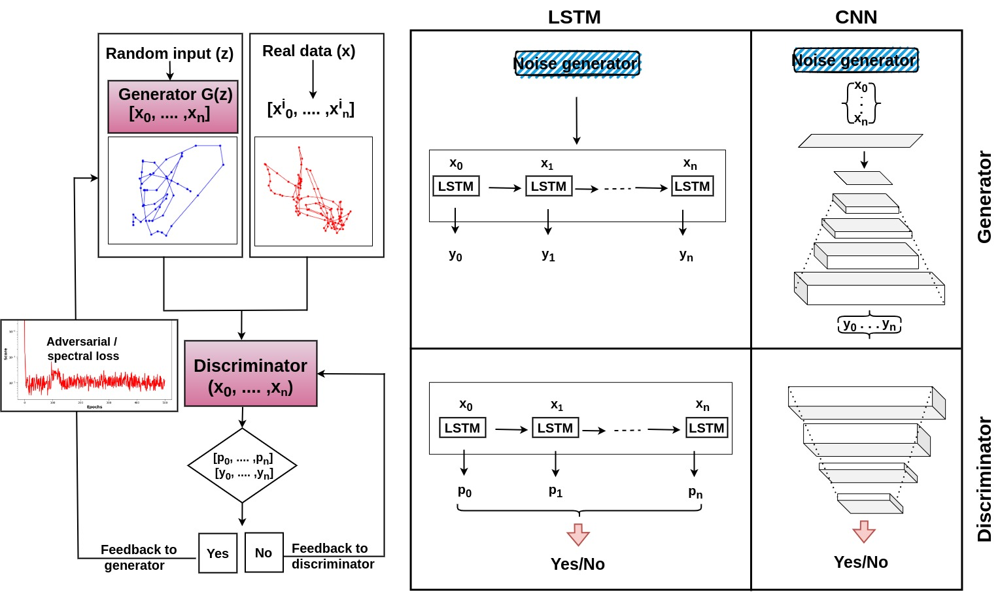

GAN: Time Series Generation Package
This package provides an implementation of Generative Adversarial Networks (GANs) for time series generation, with flexible architecture options. Users can select different combinations of generator and discriminator models, including Convolutional Neural Networks (CNN) and Long Short-Term Memory networks (LSTM), to suit their specific needs.
—
Table of Contents
—
Features
Flexible Model Selection: Choose between CNN and LSTM architectures for both the generator and discriminator.
Time Series Generation: Generate synthetic time series data based on input sequences.
Customizable Parameters: Adjust hyperparameters such as epochs, batch size, and latent dimension.
Data Preprocessing: Includes utilities for loading and preprocessing time series data.
Evaluation Metrics: Calculate and visualize performance metrics like loss and JS divergence.
Modular Codebase: Organized code structure for ease of maintenance and extension.
—
Package Structure
GANsForVirtualEye/
├── gan_package/
│ ├── __init__.py
│ ├── dataloader.py
│ ├── models.py
│ ├── train.py
│ ├── testing.py
│ ├── utils.py
├── docs/
│ ├── introduction.rst
│ ├── index.rst
├── main.py
├── setup.py
├── requirements.txt
├── README.md
—
Installation
Prerequisites
Python 3.6 or higher
pip package manager
Steps
Clone the Repository
Clone the repository to your local machine: .. code-block:: bash
git clone https://github.com/shailendrabhandari/GANsForVirtualEye.git cd GANsForVirtualEye
Set Up a Virtual Environment
It is recommended to use a virtual environment to avoid conflicts with global packages: .. code-block:: bash
python -m venv venv source venv/bin/activate # For Linux/MacOS venvScriptsactivate # For Windows
Install Dependencies
Install the required Python packages: .. code-block:: bash
pip install -r requirements.txt
Install the Package
Install the package locally for development: .. code-block:: bash
pip install .
—
Usage
The package can be used by running the main.py script, which orchestrates the data loading, model training, and evaluation processes.
Command-Line Arguments
–data_path: Path to your data folder containing the .txt files.
–save_path: Path where results and models will be saved.
–epochs: Number of training epochs (default: 500).
–batch_size: Batch size for training (default: 128).
–latent_dim: Dimension of the latent space for the generator (default: 256).
–generator_model: Generator model to use (CNNGenerator or LSTMGenerator).
–discriminator_model: Discriminator model to use (CNNDiscriminator or LSTMDiscriminator).
Example Commands
CNN Generator with CNN Discriminator
python main.py --data_path '/path/to/your/data' --save_path './results' \ --generator_model 'CNNGenerator' --discriminator_model 'CNNDiscriminator'
LSTM Generator with LSTM Discriminator
python main.py --data_path '/path/to/your/data' --save_path './results' \ --generator_model 'LSTMGenerator' --discriminator_model 'LSTMDiscriminator'
—
Data Preparation
This package explicitly expects time series data in the form of .txt files, each containing sequences of velocity measurements or similar metrics.
Data Format
Each .txt file should contain columns representing: - Time stamps - X and Y positions for left and right eye - Additional metrics like saccade indicators
Data Loading
The dataloader.py module handles data loading and preprocessing:
Data Cleaning: Removes the first n data points and handles NaN values.
Feature Engineering: Calculates velocities and filters out non-positive values.
Normalization: Normalizes the data using MinMaxScaler.
Sequence Sampling: Samples sequences of a specified length for training.
—
Model Architectures
Generators
CNNGenerator
Input: Latent vector of shape (batch_size, latent_dim, 1)
Output: Generated sequence of shape (batch_size, 1, sequence_length)
LSTMGenerator
Input: Latent vector of shape (batch_size, sequence_length, latent_dim)
Output: Generated sequence of shape (batch_size, sequence_length, output_channels)
Discriminators
CNNDiscriminator
Input: Sequence of shape (batch_size, 1, sequence_length)
Output: Probability score indicating real or fake
LSTMDiscriminator
Input: Sequence of shape (batch_size, sequence_length, input_size)
Output: Probability score indicating real or fake
—
Results
After training, results and models are saved to the specified –save_path directory.
Model Checkpoints: Saved as generator.pt and discriminator.pt.
Training Metrics: Spectral Loss values and divergence scores saved as .npy files.
Evaluation Plot: A histogram comparing real and generated data distributions saved as RealVSGenerated_velGAN.pdf.
—
Dependencies
Python 3.6 or higher
numpy, torch, torchvision, matplotlib, scipy, sklearn, pandas, progressbar2
pip install -r requirements.txt
—
Contributing
Contributions are welcome! Please follow these steps:
Fork the Repository.
Clone Your Fork.
Create a New Branch.
Make Changes and Commit.
Push to Your Fork.
Submit a Pull Request.
—
License
This project is licensed under the MIT License.
—
Contact
For questions or suggestions, please contact:
Shailendra Bhandari
GitHub: shailendrabhandari <https://github.com/shailendrabhandari>
—
Acknowledgments
Thank you to all contributors and the AI lab teams who helped improve this package.
Inspired by research on GANs for time series generation.
—
Frequently Asked Questions (FAQ)
What types of data can I use with this package?
This package is designed for time series data, specifically sequences of numerical values like velocities. While tailored for time series, it can be extended for other types of sequential data with modifications.
Can I add new models to the package?
Yes! The package is modular, allowing you to add new generator and discriminator models. Ensure they are properly defined in models.py and included in the get_generator and get_discriminator functions.
How do I adjust the sequence length or number of sequences?
Modify the sequence_length and num_sequences parameters in the prepare_datasets function within dataloader.py.
How do I know if the models are training correctly?
Monitor the loss values and JS divergence during training. Decreasing loss values indicate learning. Additionally, examine the evaluation plots for confirmation.
—